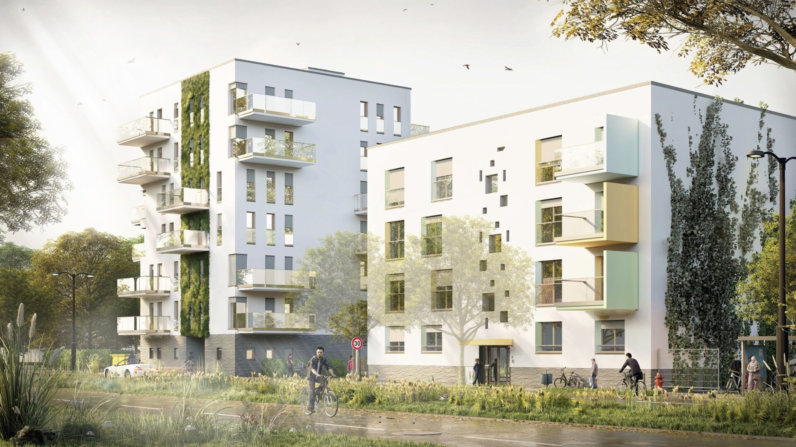
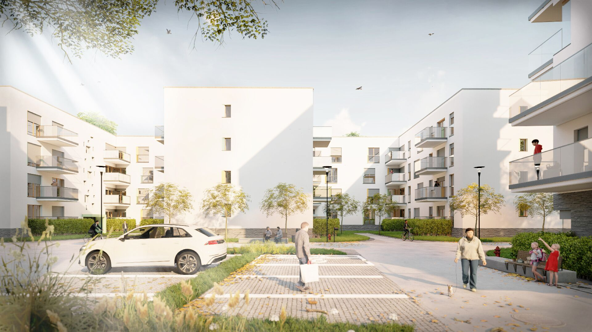
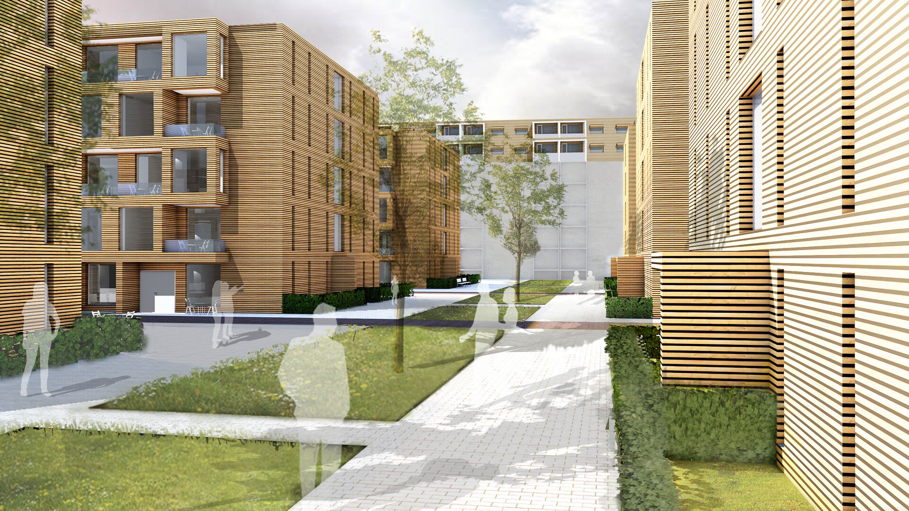
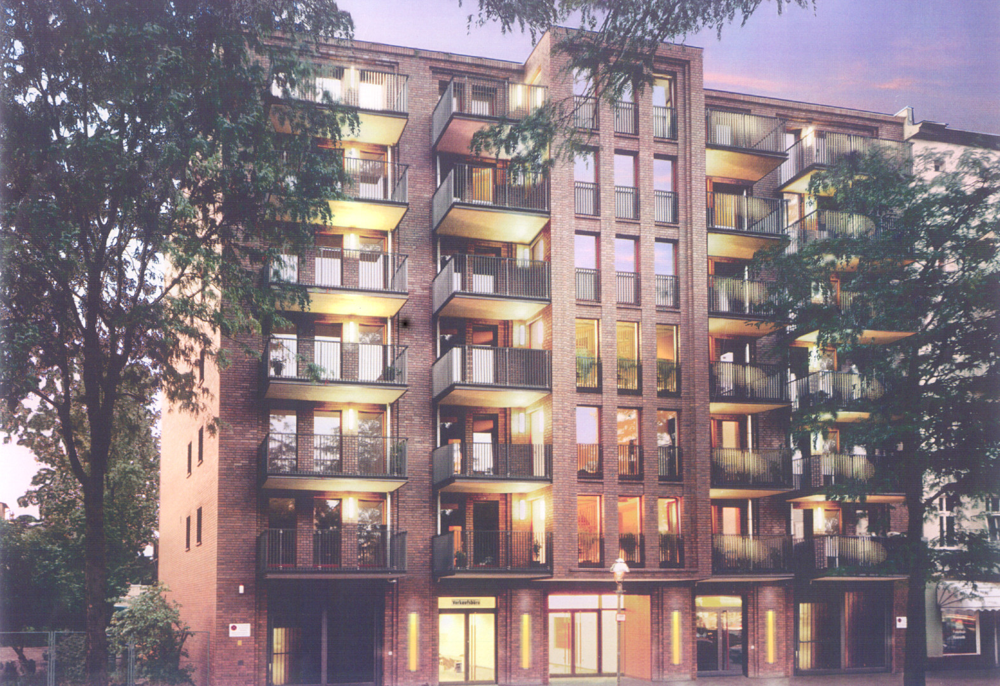
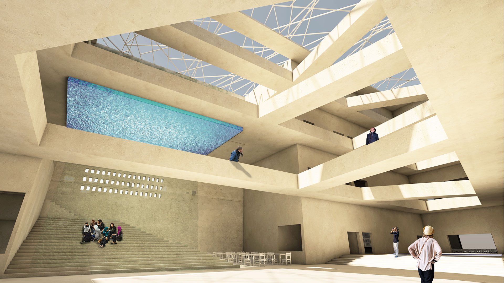

a
Kontext statt Stilvorgabe
Jeder Entwurf antwortet auf seinen städtebaulichen, sozialen und gebauten Zusammenhang.

Seit 1991 plant AKP Architekten Kauschke + Partner Bauaufgaben in Berlin, Deutschland und international — vom ersten Entwurf bis zur Schlüsselübergabe.
AKP versteht Architektur als Zusammenspiel funktionaler, ökonomischer und ökologischer Parameter — verankert in Ort, Aufgabe und Bestand.
Jeder Entwurf antwortet auf seinen städtebaulichen, sozialen und gebauten Zusammenhang.
Kosten, Realisierbarkeit und Betriebsperspektive werden als Gestaltungsparameter mitgedacht.
Detailtiefe, Genehmigungsfähigkeit und Ausführungsplanung sind tragende Disziplinen des Büros.
Materialwahl folgt der Bauaufgabe — vom robusten Bestandseingriff bis zum sorgfältigen Innenausbau.
Der Grundriss organisiert Nutzung, Belichtung, Ökonomie und Konstruktion — bevor die Fassade spricht.
Bestand wird gelesen, repariert und weitergebaut, anstatt überschrieben zu werden.
Drei Parameter, die ein Projekt gleichberechtigt prüfen — von Programm bis Energiekonzept.
Das Büro begleitet Bauaufgaben durchgängig — von der ersten Skizze bis zur Schlüsselübergabe.
Generalplanung als Haltung: AKP führt die wesentlichen Leistungsphasen im Haus zusammen und bindet das Fachnetzwerk gezielt an.
Konzept · Kontext · Programm
Bauantrag · Behörden
Werkplanung · Detail
Leistungsverzeichnis
Firmenauswahl
Qualität · Kosten · Termin
Prüfung · Kontrolle
Schlüssel · Inbetriebnahme
Eine Auswahl realisierter und projektierter Bauten aus Berlin, Deutschland und internationalem Kontext.
Berlin-Charlottenburg · Neubau Wohnungsbau
Stadtreparatur als Lückenschluss in einer Charlottenburger Blockstruktur — Wohnungsbau, der städtebaulichen Kontext, Wirtschaftlichkeit und technische Planungssicherheit zusammenführt.

Berlin-Marzahn · Pflege & Gesundheit
Wohnen, Pflege und ambulante medizinische Versorgung an einem Ort — barrierefreie Grundrisse als ordnendes Werkzeug.

Berlin-Pankow · Neubau
Wohnungsbau im Pankower Bestandsquartier — material- und kostenbewusst, im Dialog mit der Nachbarschaft.

Berlin-Reinickendorf · Aufstockung
Aufstockung im Bestand — neue Wohnungen als präzise Kuben auf einer großmaßstäblichen Wohnzeile.

Genshagen · Brandenburg
Verwaltung und Ausstellung als hybride Bauaufgabe — Halle, Büro und Repräsentation in einem Volumen.
Berlin · Schichauweg
Drei Programme unter einem Dach — Tragwerk, Haustechnik und Raumzuschnitt entlang industrieller Anforderungen.
Berlin-Grunewald · Sanierung
Sanierung und Umbau einer Privatklinik im Berliner Westen — medizinische Anforderungen im denkmalsensiblen Bestand.
Bremen · Wettbewerbsbeitrag
Wettbewerbsbeitrag für eine Kunsthalle — Lichtführung, Ausstellungslogistik und stadträumliche Adressbildung.
Korbach · Verwaltungsbau
Öffentlicher Bau im historischen Stadtkern — Verwaltung als zugängliches, repräsentatives Gebäude.
Friedrichstraße · Berlin-Mitte
Adaptive Wiederverwendung — ein Gewerbehaus wird zu einem Jugendhotel umgebaut.
Berlin · Behutsame Stadterneuerung
Modernisierung im Bestand — Substanz erhalten, Wohnqualität, Energie und Erschließung sorgfältig erneuern.
Berlin · Hofgebäude
Eine Remise im Berliner Hof wird zu Wohnraum — kleinmaßstäblicher Eingriff im gewachsenen Quartier.
Die Arbeit von AKP bündelt sich in sechs Kompetenzfeldern, die einander voraussetzen und in jeder Bauaufgabe gemeinsam wirken.
Lückenschluss, Aufstockung, Modernisierung — Bauen im gewachsenen Stadtraum.
Kosten, Förderung, Preis-Leistung — Wirtschaftlichkeit als Entwurfsfaktor von Anfang an.
Energieeffiziente Planung, Energieausweise, ökologisch geprüfte Materialwahl.
CAD- und Detailbibliothek, technische Planungssicherheit, durchgängige Werkplanung.
Generalplanerische Verantwortung mit eingespieltem Netzwerk aus Fachplanern.
Wohnen, Pflege, Verwaltung, Industrie, Bildung, Kultur — gelernt durch Wettbewerbe und Realisierungen.
Eine reduzierte Vita aus Studium, Auslandserfahrung, Wettbewerben und Veröffentlichungen.
AKP Architekten Kauschke + Partner gründet sich in Berlin.
Architekturstudium und akademische Abschlüsse als Grundlage der Praxis.
Aufbau einer digitalen Detailbibliothek während des Auslandsaufenthalts.
Praxis in Nordamerika prägt die technische und planerische Methodik.
Studien- und Arbeitsaufenthalte erweitern den typologischen Horizont.
Regelmäßige Teilnahme an offenen und geladenen Wettbewerben.
Generalplanung von Bauaufgaben in Berlin, Deutschland und international.
Eine Auswahl aus über zwei Jahrzehnten Beiträgen zu eigenen Projekten, digitaler Planung, Ökologie, internationaler Architektur und Hochhaustypologie.
Ein eingespieltes Fachnetzwerk wird projektbezogen aktiviert. Kategorien statt Telefonbuch.
Schreiben oder rufen Sie an — oder skizzieren Sie Ihr Vorhaben über das Formular.